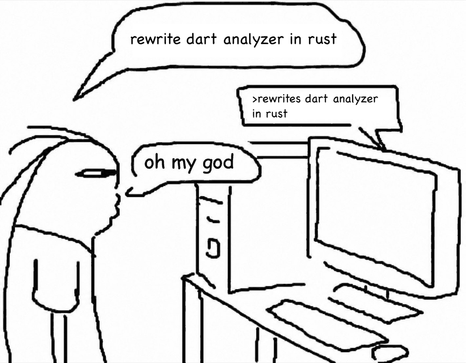

Preview · v0.1.0-preview.11 · Dart SDK 3.13.3
dartr
A Rust port of the Dart analyzer (Dart SDK 3.13.3) with analyze, format, fix and language-server.
$ brew install orestesgaolin/tap/dartr

Benchmarks
Measured on a single machine (Apple M5 Pro, 15 cores, 48 GB RAM) against Dart SDK 3.13.3. Files are analyzed in parallel on all cores. Dart caches results on disk (~/.dartServer); dartr has an optional disk cache (--cache / DARTR_CACHE_DIR, off by default).
dartr analyze
Wall time in seconds, lower is better. Measured at load average 4 to 6.
dart analyze, warm disk cachedart analyze, empty cachedartr analyze(cold or warm--cache)
packages/flutter1,309,663 lines · mean of 3 runsanalyzer 9.0.0 (pub)909,249 lines · mean of 3 runsflutter_tools455,099 lines · mean of 3 runs| project | Dart lines | dart, warm cache | dart, empty cache | dartr | dartr, warm cache | peak RSS (dart / dartr / warm cache) |
|---|---|---|---|---|---|---|
| Flutter application (pub workspace, analyzer plugins) | 1,559,637 | 78.4 s (52.2–107.1 s) | 77.6 s | 18.4 s | 16.0 s* | 3,989 MB / 2,332 MB / 2,258 MB* |
Flutter packages/flutter | 1,309,663 | 7.8 s | 20.3 s | 1.82 s | 0.21 s | 907 MB / 855 MB / 122 MB |
analyzer 9.0.0 (pub) | 909,249 | 2.3 s | 9.7 s | 0.88 s | 0.21 s | 566 MB / 606 MB / 117 MB |
flutter_tools | 455,099 | 2.4 s | 8.6 s | 0.87 s | 0.25 s | 378 MB / 543 MB / 103 MB |
* 1.32 s and 274 MB without the analyzer plugin (which runs in a Dart subprocess).
dartr language-server
Measured on the same machine (load average 4 to 6, with a short spike to 28 at the start of the Flutter run; dartr startup on Flutter and analyzer 9.0.0 from a separate run at load average 3) with bench/lsp_bench.py. Memory is RSS after startup.
dart language-server, cold (empty cache)dart language-server, warm cachedartr language-server(no cache)
.median of 20 positions| project | server | startup cold / warm | hover | completion . / stmt | references repeat / first | memory |
|---|---|---|---|---|---|---|
flutter_tools | dart | 9.3 s / 1.4 s | 0.1 ms | 2.8 / 26 ms | 42 ms / 57 ms | 266 MB |
| dartr | 0.9–3.7 s | 0.0 ms | 1.5 / 25 ms | 1.6 ms / 288 ms | 544 MB | |
analyzer 9.0.0 | dart | 8.1 s / 1.9 s | 0.1 ms | 2.1 / 23 ms | 20 ms / 36 ms | 324 MB |
| dartr | 1.3–4.2 s | 0.0 ms | 0.95 / 12 ms | 0.7 ms / 85 ms | 675 MB | |
Flutter packages/flutter | dart | 41.6 s* / 4.2 s | 0.4 ms | 3.8 / 45 ms | 257 ms / 13.8 s | 371 MB |
| dartr | 2.0–6.1 s | 0.1 ms | 2.2 / 62 ms | 5.8 ms / 5.9 s | 858 MB | |
| Flutter application | dart | 93.0 s / 40.3 s | 0.4 ms | 4.8 / 53 ms | 40 ms / 6.0 s | 3,410 MB |
| dartr | 33.0 s (18.2–47.7 s) | 0.0 ms | 1.2 / 34 ms | 0.4 ms / 0.94 s | 3,138 MB |
* Short load spike (load average 28) at the start of the Flutter language-server run.
Method: hyperfine -i -N -w 1 -r 3 via bench/compare.sh, /usr/bin/time -l via bench/memory.sh, and bench/lsp_bench.py; see docs/BENCHMARKS.md for more charts and full results.
Parity
dartr analyze reports the same diagnostics as dart analyze (3.13.3) on Flutter (packages/flutter), flutter_tools, analyzer 9.0.0, a 1.56 million line Flutter application (with analyzer plugins) and 671 real packages from the pub cache and the Flutter SDK. dartr format matches dart format on the dart_style tests and 220 pub packages, dartr fix matches dart fix on 65 pub packages with 85 fixable lints enabled, and dartr language-server matches dart language-server on 8,876 sampled requests across 42 pub packages and registers every capability (plus all 59 requests and 22 notifications of --protocol=analyzer).
Correctness is checked with differential tests against the Dart SDK 3.13.3 tools on the SDK test suite and package corpora; see the README.
Differences
- Memory: similar to Dart's for
dartr analyzeon packages (lower on Flutter and the full application; 103 to 122 MB on packages with a warm--cache) and about 2 times Dart's fordartr language-serveron packages (slightly lower on the full application; see the memory charts). - Disk cache:
dartr analyzehas an optional disk cache (--cache/DARTR_CACHE_DIR, off by default);dartr language-serveranalyzes from source on every run, so a warmdart language-servercan start faster on packages (1.4 s vs 0.9–3.7 s onflutter_tools, 1.9 s vs 1.3–4.2 s onanalyzer9.0.0, 4.2 s vs 2.0–6.1 s on Flutter). - Remaining gaps:
dartr fixdoes not includepubspec.yamlmissing_dependencyfixes yet.flutter analyzeand IntelliJ invoke<sdk>/bin/dart language-serverdirectly and have no setting for another binary. - Platforms and SDK requirement: macOS arm64 and Linux x86_64 only. Requires a Dart or Flutter SDK (3.13.3) on
PATHto read thedart:libraries.
Editor setup
- VS Code (Dart-Code): set
"dart.analyzerPath"to/opt/homebrew/opt/dartr/libexec/dartr_shim.dart(installed by Homebrew), then reload the window. - Neovim, Helix, Zed, Emacs, Sublime: run
dartr language-serveras the Dart language server. - Back to the Dart server: remove
"dart.analyzerPath"and reload the window. - Details: docs/editor-setup.md.